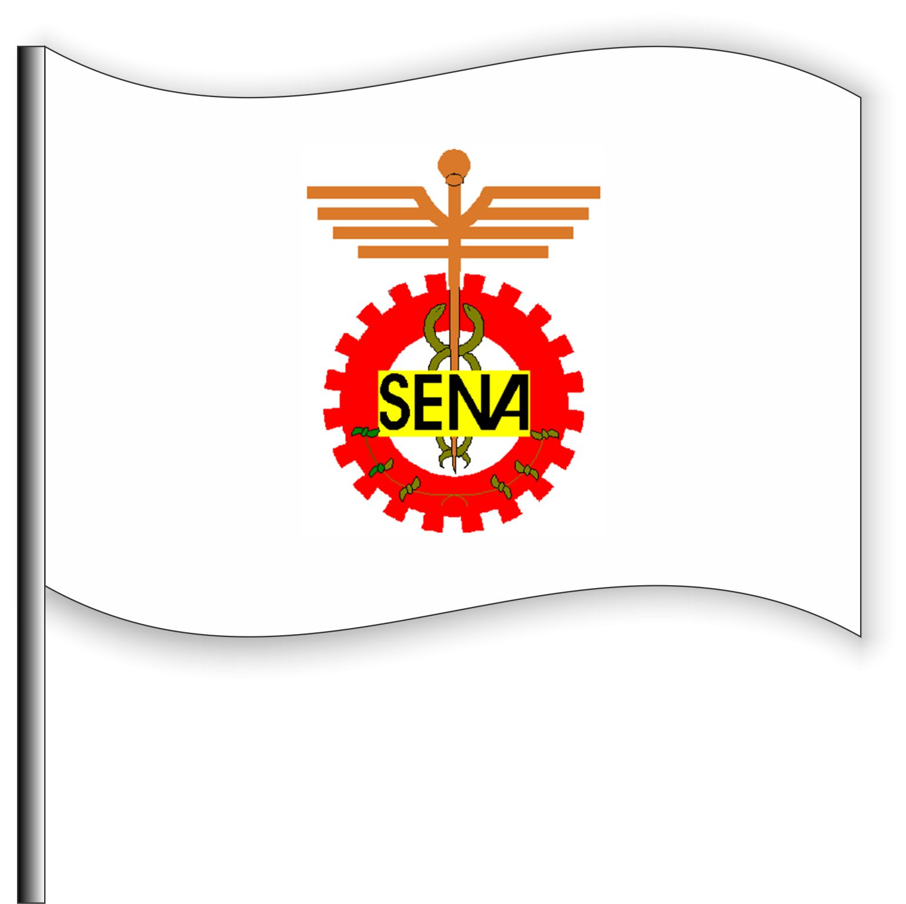

CONTEXTUALIZACIÓN SENA
Impacto Nacional
El Servicio Nacional de Aprendizaje representa una de las inversiones más estratégicas del Estado colombiano en el desarrollo del capital humano. A través de su modelo de formación profesional integral, contribuye significativamente al crecimiento económico, la innovación tecnológica y el progreso social del país.
Formación Integral
La formación que ofrece el SENA va más allá de la capacitación técnica, abarcando el desarrollo de competencias ciudadanas, emprendimiento, innovación y liderazgo. Este enfoque integral prepara a los colombianos no solo para el mundo laboral, sino para ser agentes de cambio en sus comunidades.
Alcance y Cobertura
Con presencia en todo el territorio nacional, el SENA democratiza el acceso a la educación técnica y tecnológica, llegando especialmente a poblaciones vulnerables y regiones apartadas, contribuyendo así a la reducción de la desigualdad y la promoción de la equidad social.
MISIÓN Y VISIÓN
🎯 MISIÓN
El SENA se encarga de preparar a los colombianos con formación gratuita, ayudándolos a desarrollarse y a encontrar mejores oportunidades de trabajo, al mismo tiempo que aporta al crecimiento económico y tecnológico del país.
🚀 VISIÓN
El SENA enfoca su visión hacia el año 2026 en donde desea convertirse en un referente de formación no solo a nivel nacional sino internacional, generando valor a la población y permitiendo el fortalecimiento económico y social apoyando las economías locales, además busca que sus aprendices sean personas íntegras, con vocación de servicio y formados con estándares de calidad mundial.
Objetivos Estratégicos
La misión y visión del SENA se materializan a través de objetivos estratégicos que buscan la excelencia en la formación, la innovación constante, el desarrollo regional y la construcción de una sociedad más justa y equitativa para todos los colombianos.
SÍMBOLOS SENA

Escudo
El escudo y la bandera del SENA, diseñados al fundar la institución, reflejan los tres sectores económicos en los que se opera.
1. El piñón: Representa el sector industrial
2. El caduceo: Simboliza el comercio y servicios
3. El café: Relacionado con el sector primario y extractivo

Bandera
El fondo es blanco y en el centro está el escudo de la institución.

Logosímbolo
El logotipo refleja que en nuestra formación, cada persona es responsable de su propio aprendizaje.
Significado de los Símbolos
Cada elemento simbólico del SENA tiene un profundo significado que representa la diversidad económica del país y el compromiso de la institución con el desarrollo integral de todos los sectores productivos colombianos.
HIMNO SENA
🎵 Himno Institucional
Estudiantes del SENA, ¡adelante por Colombia!
Con amor ánimo, transformemos el país en un lugar mejor.
El futuro de la patria está en nuestras manos;
el trabajo es el camino hacia el progreso.
En el SENA, formamos hombres libres que quieren triunfar.
Con ciencia y técnica, trazaremos nuevos rumbos de paz.
La patria nos anima: ¡triunfemos!
Así lograremos más justicia y libertad.
Espíritu Institucional
El himno del SENA encarna los valores fundamentales de la institución: el amor por Colombia, el compromiso con el progreso, la formación de ciudadanos libres y la búsqueda constante de la justicia y la libertad a través del trabajo y la educación.
ORGANIGRAMA GENERAL
Estructura Organizacional
El SENA posee una estructura jerárquica encabezada por el Consejo Directivo Nacional y la Dirección General, apoyados por oficinas de Control Interno, Comunicaciones y Sistemas. Incluye direcciones de Formación Profesional, Empleo, Planeación, Jurídica, Administrativa y Financiera, junto con Direcciones Regionales y Centros de Formación, garantizando gestión eficiente, coordinación nacional y articulación con políticas de formación y empleo.
Niveles Organizacionales
La estructura del SENA está diseñada para garantizar una gestión eficiente y coordinada a nivel nacional, regional y local, asegurando que las políticas institucionales se implementen de manera efectiva en todos los centros de formación del país.
Coordinación Nacional
El modelo organizacional permite una articulación efectiva entre las diferentes direcciones y niveles, facilitando la toma de decisiones estratégicas y la implementación de programas de formación alineados con las necesidades del sector productivo nacional.
DIRECCIÓN DE FORMACIÓN PROFESIONAL
Estructura de la Dirección
La dirección de formación profesional presenta nueve líneas estratégicas que garantizan la calidad y pertinencia de la formación ofrecida por el SENA:
Enfoque Integral
Estas nueve líneas estratégicas trabajan de manera articulada para asegurar que la formación profesional integral del SENA mantenga los más altos estándares de calidad, innovación y pertinencia con las necesidades del sector productivo y social del país.
INTEGRANTES DEL EQUIPO
👥 Equipo de Trabajo
Presentamos al equipo responsable de este proyecto de contextualización del SENA:
Compromiso Académico
Este equipo de trabajo ha desarrollado una investigación exhaustiva sobre la contextualización del SENA, demostrando el compromiso con la excelencia académica y el conocimiento profundo de la institución más importante de formación profesional en Colombia.